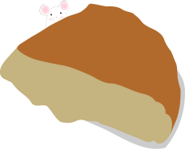
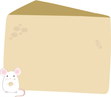
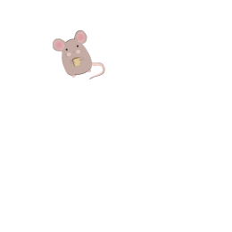
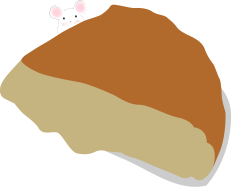
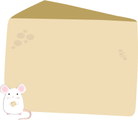
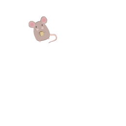

Welcome to my wine and cheese pairing app. This app will help you decide which red wines to pair with cheese. Note– There are only a few wines and cheeses, but for more visit VinePair. If you're looking to learn more about wine, check out Wine Spectator's website. They have all the information your could need to learn more about what you're drinking.
 






Note: This information was adapted from this wine and cheese pairing interactive graphicfrom the researchers at the University of Toronto.